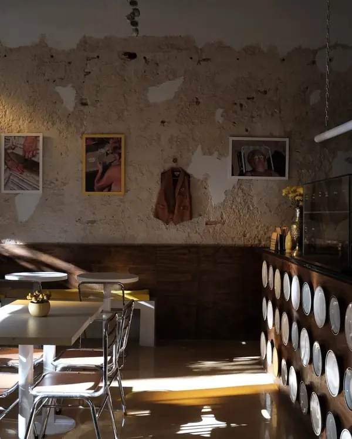
● ahora
Desayuno
10:00 a 12:00 hs
- Cornetto con queso crema
- Tostada & palta
- French toast
cantina italiana en Villa Devoto
Pastas, pizzas, sándwiches y postres inspirados en memorias familiares.
Abrimos de miércoles a domingo de 10:00 a 00:00 hs
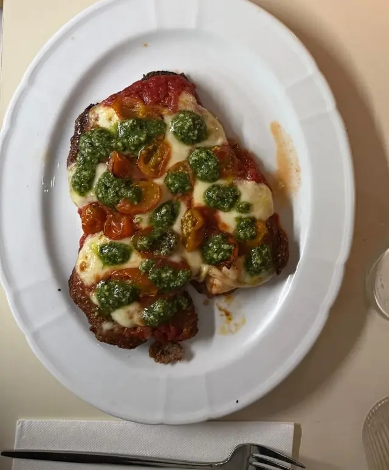
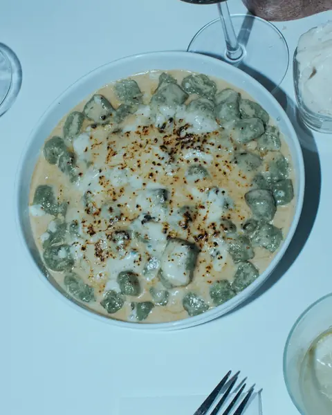
el reloj del Pasti
Desayunos, almuerzos, meriendas y cenas: cada hora tiene lo suyo.

10:00 a 12:00 hs
12:00 a 16:00 hs
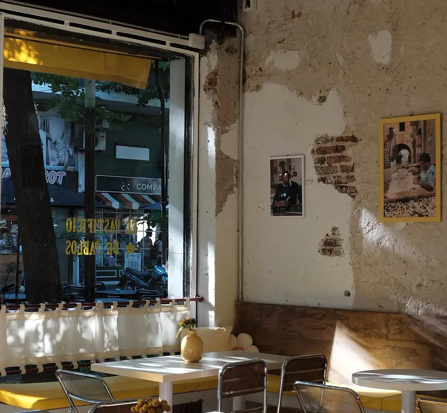
16:00 a 20:00 hs
20:00 a 00:00 hs
Los lunes abrimos de 16:00 a 00:00 hs y los martes descansamos.
le mani sagge sanno meglio
Nuestra carta es una suerte de álbum familiar que pasó de manos sabias en manos sabias. Dalas vuelta.
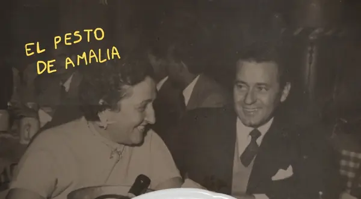
Amalianuestra carta es una suerte de álbum familiar
en el subsuelo
Bodegas invitadas, menús pensados para cada copa y noches que inventamos porque sí. Guardate un lugar antes de que se llenen las copas.
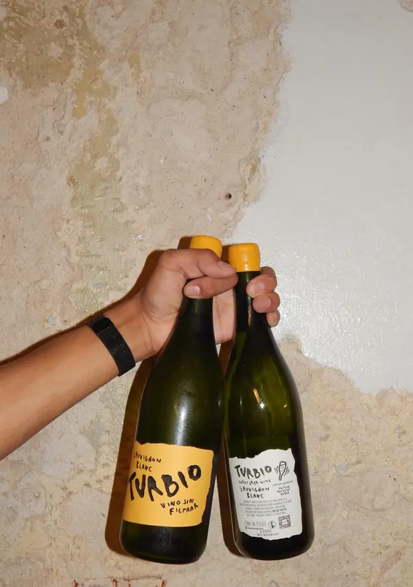
Cargando la agenda…
Fernández de Enciso 3963
Paredes descascaradas, fotos de la familia, manteles a cuadros y un subsuelo para las noches largas.
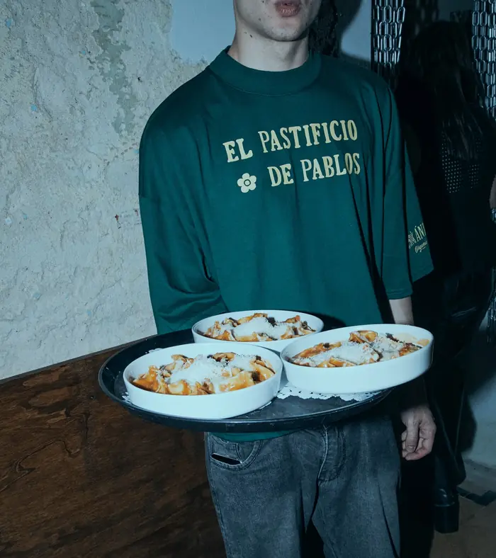
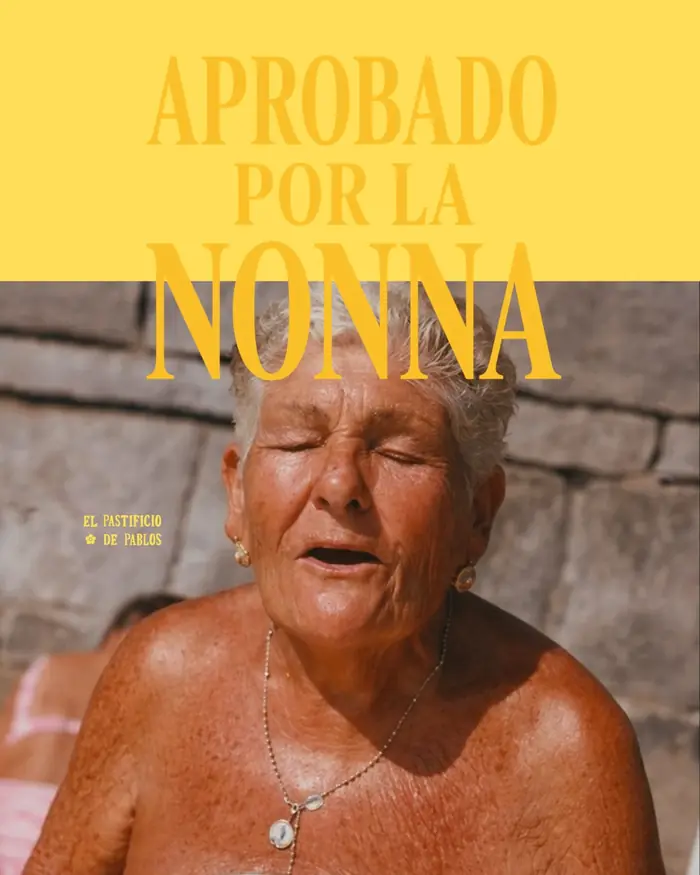
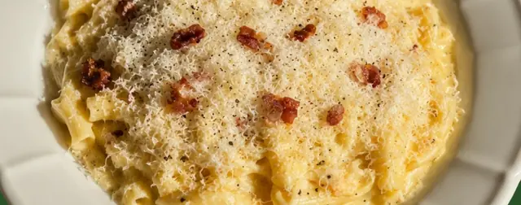
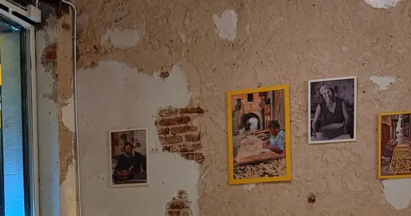
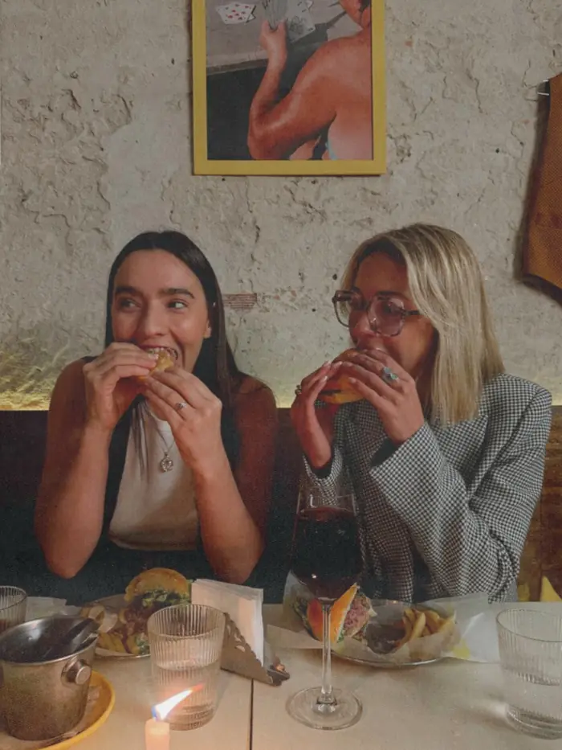
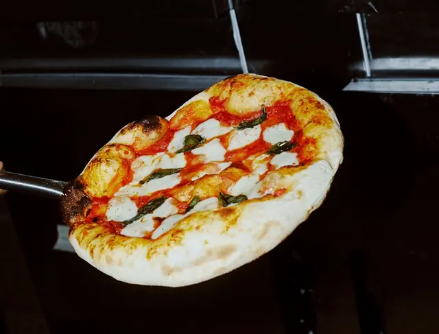
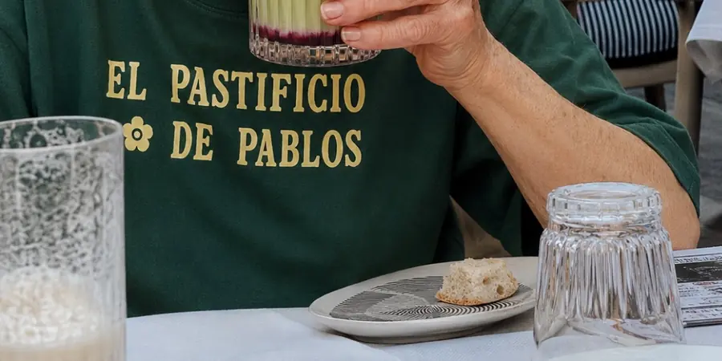
cómo llegar